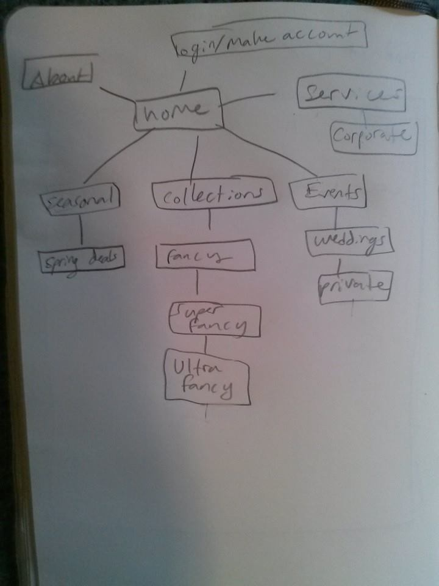
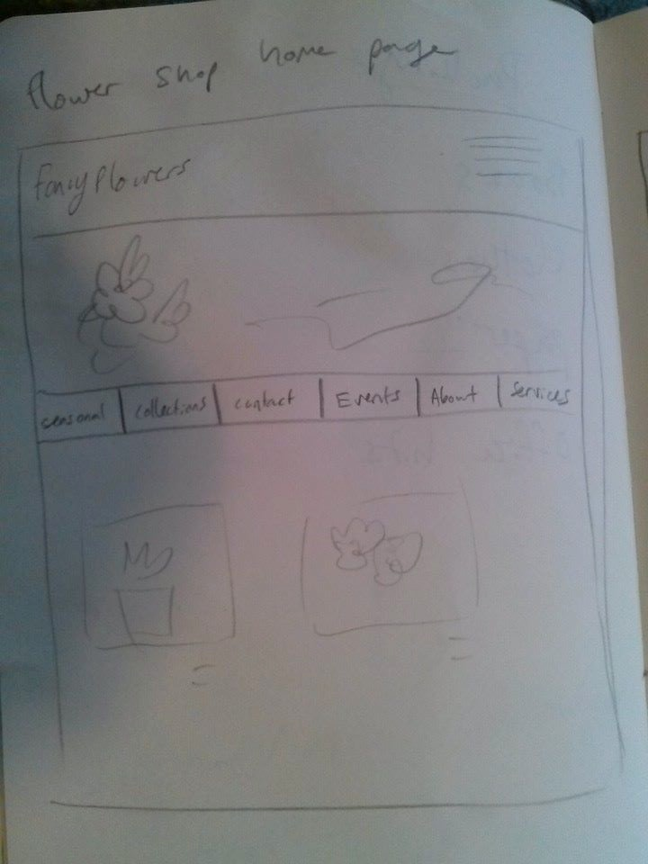
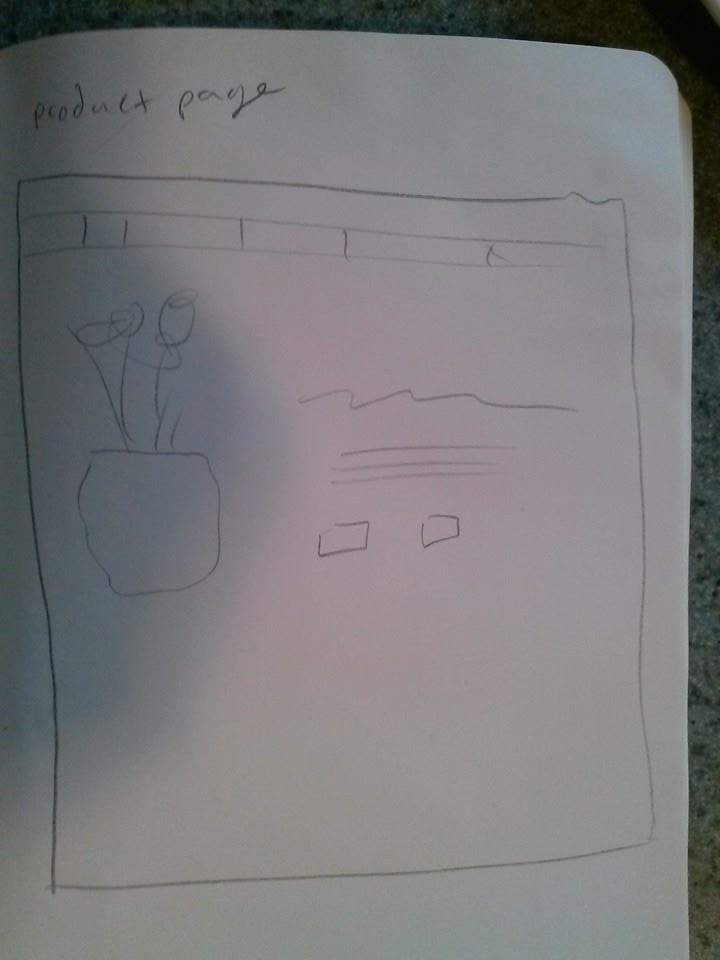

User scenarios:
- Someone close to them has passed away, and they would like to arrange flowers for the funeral.
They search for highly rated flower stores in the area and find the site. They are able to look at funeral
arrangement options and order them online for the date and venue the funeral is being held.
- User is looking to buy a corsage for their prom date. They are looking for the ability to customize
some flowers in the corsage, and sort their options by price. They are able to make a reservation online
with the flowers of their choosing for a price they want, and pick up the corsage on the date they set.
- A new hotel is opening up, and would like regular flower arrangements in the lobby. They look through examples
of corporate arrangements the website has, and make an account. Through their account, they are able to
communicate with the store about scheduling, arrangement needs, and give feedback.


